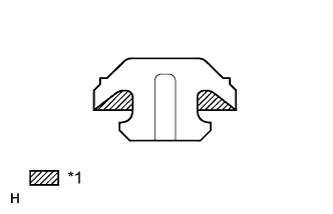

ЗАДНИЙ ТОРМОЗ > УСТАНОВКА |
| 1. УСТАНОВИТЕ ЗАДНИЙ ТОРМОЗНОЙ ДИСК |
Совместите метки и установите задний тормозной диск.
| 2. УСТАНОВИТЕ ЗАЩИТНЫЙ ЧЕХОЛ ВТУЛКИ ЗАДНЕГО ДИСКОВОГО ТОРМОЗА |
Нанесите тонкий слой гликолевой консистентной смазки на основе литиевого мыла на всю окружность нового защитного чехла втулки заднего дискового тормоза в зоне контакта с тормозной скобой заднего дискового тормоза, а также на всю внутреннюю окружность с обоих концов.
| *1 | Гликолевая консистентная смазка на основе литиевого мыла |
Установите защитный чехол втулки заднего дискового тормоза на тормозную скобу заднего дискового тормоза.
| 3. УСТАНОВИТЕ НАПРАВЛЯЮЩУЮ ВТУЛКУ ЦИЛИНДРА ЗАДНЕГО ДИСКОВОГО ТОРМОЗА |
Нанесите тонкий слой гликолевой консистентной смазки на основе литиевого мыла на новую направляющую втулку цилиндра заднего дискового тормоза.
| *1 | Гликолевая консистентная смазка на основе литиевого мыла |
Установите направляющую втулку цилиндра заднего дискового тормоза на тормозную скобу заднего дискового тормоза.
Нанесите тонкий слой гликолевой консистентной смазки на основе литиевого мыла на направляющий палец цилиндра, вставьте его в направляющую втулку цилиндра заднего дискового тормоза, чтобы надлежащим образом смазать детали, а затем извлеките его.
| *1 | Гликолевая консистентная смазка на основе литиевого мыла |
| 4. УСТАНОВИТЕ ПРОБКУ ОТВЕРСТИЯ КОЛЕСНОГО ТОРМОЗНОГО ЦИЛИНДРА ЗАДНЕГО ДИСКОВОГО ТОРМОЗА |
|  |
Нанесите тонкий слой гликолевой консистентной смазки на основе литиевого мыла на новую пробку отверстия колесного тормозного цилиндра заднего дискового тормоза.
| *1 | Гликолевая консистентная смазка на основе литиевого мыла |
Установите пробку отверстия колесного тормозного цилиндра заднего дискового тормоза на тормозную скобу заднего дискового тормоза.
| 5. УСТАНОВИТЕ ЛЕВУЮ ТОРМОЗНУЮ СКОБУ ЗАДНЕГО ДИСКОВОГО ТОРМОЗА В СБОРЕ |
Установите тормозную скобу заднего дискового тормоза и 2 плоских шайбы, закрепив их 2 болтами.
| 6. УСТАНОВИТЕ ОПОРНУЮ ПЛАСТИНУ КОЛОДОК ЗАДНЕГО ДИСКОВОГО ТОРМОЗА № 1 |
Установите 2 опорных пластины тормозных колодок заднего дискового тормоза № 1 на тормозную скобу заднего дискового тормоза.
| 7. УСТАНОВИТЕ ОПОРНУЮ ПЛАСТИНУ КОЛОДОК ЗАДНЕГО ДИСКОВОГО ТОРМОЗА № 2 |
Установите 2 опорных пластины тормозных колодок заднего дискового тормоза № 2 на тормозную скобу заднего дискового тормоза.
| 8. УСТАНОВИТЕ ПЛАСТИНУ-ИНДИКАТОР ИЗНОСА КОЛОДОК ЗАДНЕГО ДИСКОВОГО ТОРМОЗА |
Установите пластину-индикатор износа колодки заднего дискового тормоза на колодку дискового тормоза с внутренней стороны.
| 9. УСТАНОВИТЕ ПРОТИВОСКРИПНУЮ ПЛАСТИНУ ЗАДНЕГО ДИСКОВОГО ТОРМОЗА |
Установите противоскрипные пластины заднего дискового тормоза на тормозные колодки заднего дискового тормоза.
| 10. УСТАНОВИТЕ КОЛОДКИ ЗАДНЕГО ДИСКОВОГО ТОРМОЗА |
Установите 2 опорных пластины тормозных колодок заднего дискового тормоза № 1 и № 2 на тормозную скобу заднего дискового тормоза.
Установите 2 тормозных колодки заднего дискового тормоза вместе с противоскрипными пластинами заднего дискового тормоза на колесный тормозной цилиндр заднего дискового тормоза.
| 11. УСТАНОВИТЕ ТОРМОЗНОЙ ЦИЛИНДР ЗАДНЕГО ЛЕВОГО ДИСКОВОГО ТОРМОЗА В СБОРЕ |
Нанесите тонкий слой гликолевой консистентной смазки на основе литиевого мыла на поверхности трения направляющих пальцев цилиндра заднего дискового тормоза.
| *1 | Гликолевая консистентная смазка на основе литиевого мыла |
Установите колесный тормозной цилиндр заднего дискового тормоза с помощью 2 направляющих пальцев цилиндра заднего дискового тормоза.
| 12. ПОДСОЕДИНИТЕ ЗАДНИЙ ЛЕВЫЙ ГИБКИЙ ШЛАНГ |
Подсоедините задний гибкий шланг к колесному тормозному цилиндру заднего дискового тормоза с помощью пустотелого соединительного болта-штуцера и новой прокладки.
| 13. ПРОКАЧАЙТЕ ТРУБОПРОВОД ТОРМОЗНОЙ СИСТЕМЫ (для моделей с гидравлическим усилителем тормозной системы) |
Установите замок зажигания в положение ON (ВКЛ).
Снимите крышку наливного отверстия бачка главного цилиндра тормозной системы в сборе.
Добавляйте тормозную жидкость до тех пор, пока ее уровень не окажется между отметками MIN и MAX бачка.
Многократно нажимая на педаль тормоза, удалите воздух из прокачного штуцера колесного тормозного цилиндра правого переднего дискового тормоза.
Повторяйте рассмотренную выше операцию до тех пор, пока воздух не будет удален полностью, а затем затяните прокачной штуцер, удерживая нажатой педаль тормоза.
Удалите воздух из прокачного штуцера колесного тормозного цилиндра левого переднего дискового тормоза таким же образом, как с правой стороны.
Удерживая нажатой педаль тормоза, ослабьте прокачной штуцер колесного тормозного цилиндра правого заднего дискового тормоза и, не отпуская педаль тормоза, дайте тормозной жидкости вытекать из прокачного штуцера, пока работает электродвигатель насоса.
Когда в тормозной жидкости не будет воздуха, затяните прокачной штуцер, а затем отпустите педаль тормоза.
Удалите воздух из прокачного штуцера колесного тормозного цилиндра левого заднего дискового тормоза таким же образом, как с правой стороны.
Выключите зажигание.
Проверьте, нет ли утечек тормозной жидкости.
Проверьте и отрегулируйте уровень тормозной жидкости (Нажмите здесь).
Удалите коды DTC (Нажмите здесь).
| 14. ПРОКАЧАЙТЕ ТРУБОПРОВОД ТОРМОЗНОЙ СИСТЕМЫ (для моделей с вакуумным усилителем тормозной системы) |
Снимите крышку наливного отверстия бачка главного цилиндра тормозной системы в сборе.
Добавляйте тормозную жидкость до тех пор, пока ее уровень не окажется между отметками MIN и MAX бачка.
Ослабьте прокачной штуцер колесного тормозного цилиндра правого переднего дискового тормоза.
Многократно нажимая на педаль тормоза, удалите воздух из прокачного штуцера колесного тормозного цилиндра правого переднего дискового тормоза.
Когда воздух будет удален полностью, затяните прокачной штуцер, удерживая нажатой педаль тормоза.
Удалите воздух из прокачного штуцера колесного тормозного цилиндра левого переднего дискового тормоза таким же образом, как с правой стороны.
Ослабьте прокачной штуцер колесного тормозного цилиндра правого заднего дискового тормоза.
Многократно нажимая на педаль тормоза, удалите воздух из прокачного штуцера колесного тормозного цилиндра правого заднего дискового тормоза.
Когда воздух будет удален полностью, затяните прокачной штуцер, удерживая нажатой педаль тормоза.
Удалите воздух из прокачного штуцера колесного тормозного цилиндра левого заднего дискового тормоза таким же образом, как с правой стороны.
Проверьте, нет ли утечек тормозной жидкости.
Проверьте и отрегулируйте уровень тормозной жидкости (Нажмите здесь).
| 15. УСТАНОВИТЕ ЗАДНЕЕ КОЛЕСО |